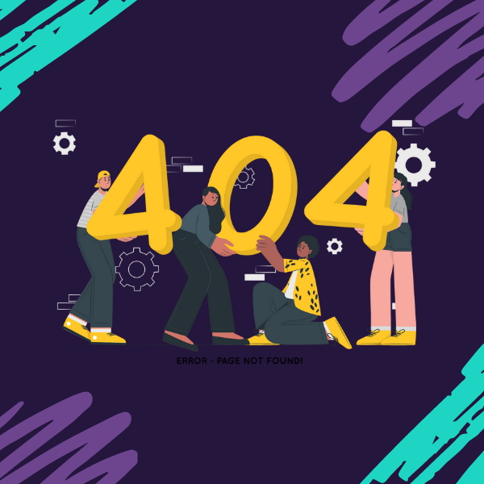
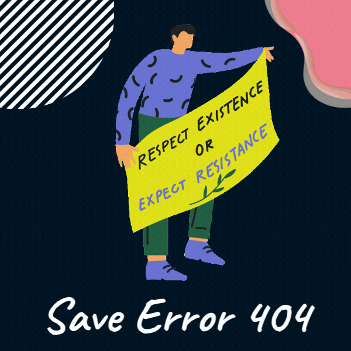

✨ Qui sommes nous ? ✨
L'histoire de l'organisme sans but lucratif SAUVONS L'ERROR404 est un subtil mélange d'amitié, de nostalgie et de passion. Elle débute avec quatre amis passionnés de technologie qui, tristement mais surement, se rapprochaient avec horreur de ce que nombre d’entre nous appelons le début de la fin… LA TRENTAINE. C’est de ce constat effrayant que tout commença. Trente ans déjà... Au revoir à notre jeunesse, au revoir à tous ces fichiers perdus sur nos clés USB, au revoir à nos baladeurs MP3 qui nous aurons consolé lors de nos premiers chagrin d’amour, au revoir à nos soirées passées sur MSN à envoyer des wizz , au revoir à notre Skyblog qui nous aura appris les prémices de la maintenance d’un site internet… Que d’au revoir quand 30 ans sont passés, que de misère à tout abandonner… Mais il est quelque chose que nos amis ont refusés de laisser tomber. Quelque chose ayant marqué leurs jeunes années sur un PC : L’ERREUR404.
😵 L’ERREUR 404 😵
L’erreur 404, c’est cette page qui s’ouvre s’ouvrait lorsque l’URL demandé n’était pas retrouvée par le navigateur. Malheureusement, cette page est en voie de disparition. Retrouvez notre article à ce sujet : L’erreur 404 fonce-t-elle vers l’extinction ? C’est tout un monde et toute une époque qui disparaitrait avec elle si jamais cela venait à se produire. Sa mort avérée représenterait une grande perte pour la culture web et toute sa communauté. C’est la raison pour laquelle nous avons décidé de lancer l’organisme SAUVONS L'ERREUR404. Après avoir tant perdu, nous ne pouvons pas nous permettre de perdre également ce joyaux emblématique de l’histoire du web. Notre mission est donc de vous convaincre vous en tant que développeur, mais également les entreprises, les femmes et les enfants, que c’est dans notre intérêt à tous de lutter contre la disparition programmée de cette erreur. Nos objectifs sont multiples, dans un premier, nous souhaitons à tout prix éviter que l’E404 disparaissent de la surface du web, mais nous voulons également la faire revivre et lui donner un nouvel élan pour que toutes les générations puissent profiter de cette merveille du monde. C’est en ce sens, que nous avons déposé un dossier de candidature au patrimoine mondial de l’UNESCO afin qu’y figure l’ERREUR 404 et que cet héritage puisse se perpétuer. Nous participons également de façon très actives à des présentations de notre point de vue et tentons de convertir le plus grand nombre à l’errorisme. Mais toutes ces actions ont un coût et nos bourses sont limitées. Notre action seule ne peut suffire pour gagner cette lutte acharnée, c’est ensemble, que cette partie doit se jouer. Donner aujourd’hui, c’est contribuer à la navigation de demain.
SAUVER L’ERREUR 404